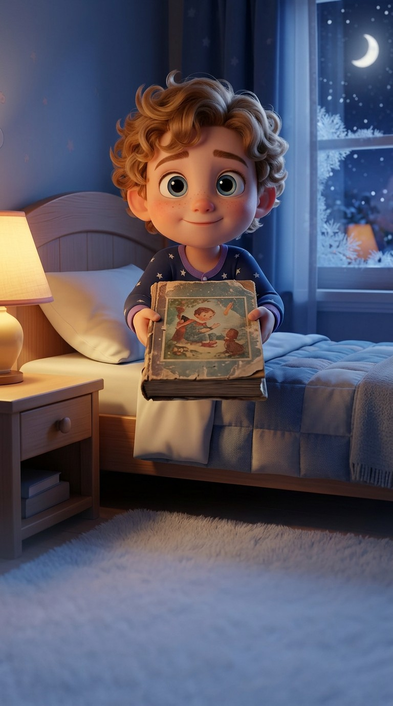
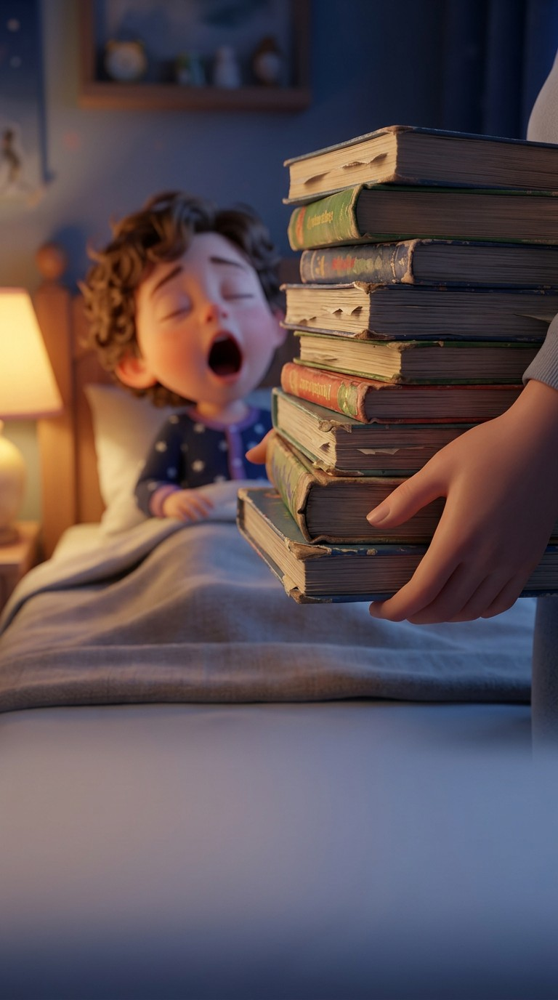
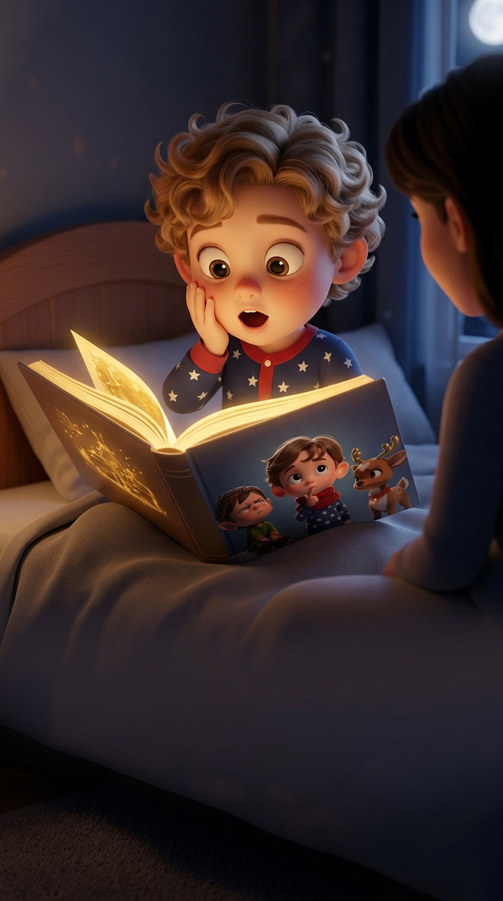
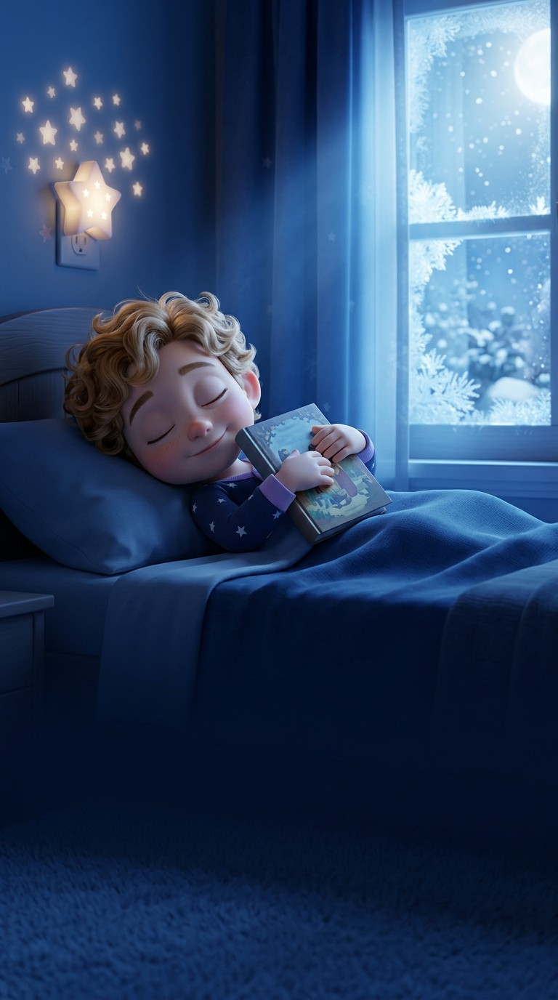

20h47
« Encore une histoire, Maman ! »

Je les connaissais toutes par cœur.
Lui aussi.
Le héros de l'histoire
Créer son histoire
Alors un soir, j'ai essayé autre chose.

Le hoquet doré de la nuit de Noël

Une photo. Et une histoire écrite…
rien que pour lui.

Le lendemain soir, il l'a ouvert.
« Maman…
c'est MOI ? »

Ce soir-là, il s'est endormi
en le serrant contre lui.
Ce soir,
l'histoire,
c'est la sienne.
Le livre dont votre enfant est le héros
encoreunehistoire.fr
Lu gratuitement avant d'acheter